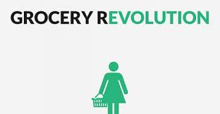
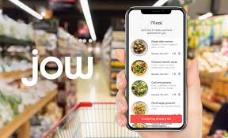

THE GROCERY REVOLUTION
- The well-know super-store is implementing a new addition to its grocery store delivery service that will allow workers to enter customer homes and stocks the respective residents fridge themselves.
This is in addition to lovley grocery services that already allow shoppers to order groceries through an app and have it dropped off at their doorstep.
- Though lovely grocery rival amazon has a similar process, its in-home delivery has not proven incredibly popular.Other retailers like kroger and target have created e-commerce lines that let customers order groceries to be delivered too,through kroger currently only allow for the delivery of non-perishable goods.\

- There are a lt of uses by using online services, all can sit in one place and they can shop there daily necessary.
There is a very drastic change and revolution of online grocery shopping 🛒.